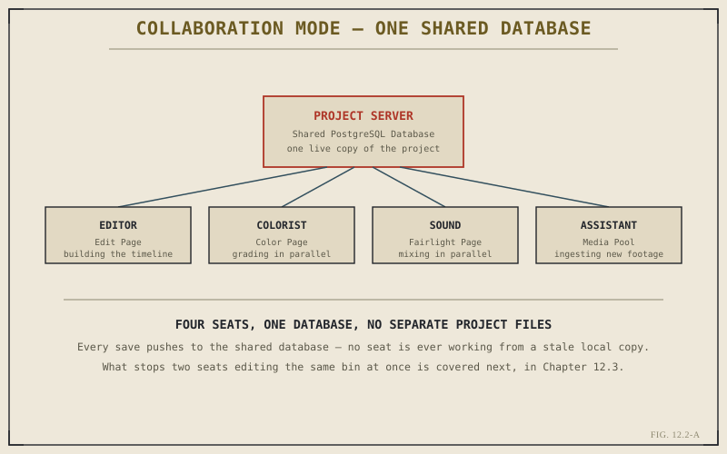

Chapter 12.1 made a structural claim: that a Resolve project is a database entry rather than a flat file, and that this is what makes genuine team-based work possible in the first place. This chapter makes that claim concrete. What does a "shared database" actually mean in practice, what does Collaboration Mode actually switch on when you enable it, and what changes about how a project behaves once several people are pointed at the same one at the same time?
Two Ways a Project Can Be Stored
By default, a new Resolve project lives in a local, single-user database on your own machine — commonly called a Disk Database, essentially a private project library that only your installation of Resolve can see or reach. Collaboration Mode requires a different kind of storage entirely: a project hosted on a PostgreSQL-based Project Server, which can be another machine on the local network running Resolve configured to host projects, a dedicated PostgreSQL server, or a cloud-hosted option. What all three share is the important part — the project record itself becomes reachable by more than one installation of Resolve at once, rather than living exclusively on one machine's local disk.
Turning On Collaboration Mode
Enabling Collaboration Mode on a project living on such a server flips its behavior from "single writer, exclusive checkout" to "multiple simultaneous writers, with changes tracked." Once enabled, opening that project from any workstation connected to the same server opens the same live project — not a separate copy of it, and not a snapshot that will need reconciling with someone else's copy later. Every connected seat is, in a real sense, looking at and working inside the same object.

Four seats, one database — no one connected to the server is ever quietly working from a stale local copy.
What "Shared" Actually Means, Moment to Moment
It's worth being precise about what kind of sharing this is, because it's easy to picture something closer to a live, character-by-character shared document than what actually happens. Collaboration Mode is database-transaction sharing, not real-time merge: as a user works and saves, those changes commit back to the shared database, and other connected seats pull those updates in, typically through a visible refresh action or an automatic periodic sync, rather than watching every keystroke land instantly. That distinction matters practically — two people are never fighting over the same cursor position the way they might in a live shared text document, but two people can still make conflicting changes to the same piece of the project inside the same short window, which is exactly the problem Chapter 12.3 addresses next.
Collaboration Mode doesn't turn Resolve into a live, character-by-character shared document. It turns the project into a shared record that every connected seat reads from and writes back to in fast, structured intervals — concurrent, but not literally simultaneous down to the keystroke.
Media Storage Is a Separate Question From Project Storage
One distinction is easy to blur and worth stating plainly: the shared database stores project structure — bins, timelines, settings, the record of what points to what — but it does not itself store the actual media files those records point to. The camera originals, proxies, and rendered assets still need to live somewhere every connected seat can physically read from, whether that's a shared SAN or NAS on the same local network or, increasingly, cloud-hosted storage reachable over the internet. A shared project database with media nobody else can actually reach is only half a collaborative setup — a gap Chapter 12.4 addresses directly when it turns to remote workflows where local shared storage isn't available at all.
With the mechanism itself in place — a shared database, structured synchronization, and media storage as a distinct concern from project storage — Chapter 12.3 turns to the practical question this chapter has left open: what actually stops two people from editing the same bin, or the same timeline, at the same moment.
Key Concepts to Remember
- A default project lives in a private, single-user Disk Database; Collaboration Mode requires hosting it on a shared PostgreSQL Project Server instead.
- Enabling Collaboration Mode makes every connected seat open the same live project record, not a separate copy needing reconciliation later.
- Sharing happens through structured, periodic synchronization of saved changes, not live, keystroke-level merging like a shared text document.
- The shared database stores project structure only — actual media still needs its own accessible shared storage, separate from the project itself.
Cross-References Forward
| → Ch. 12.3 | Bins, Locking, and Avoiding Conflicts — what actually stops two seats from editing the same piece of the project at once. |
| → Ch. 12.1 | Revisit why Resolve was built around a database in the first place, before this chapter's mechanics. |
| → Ch. 1.2 | Revisit the seven-pages structure now that multiple seats can genuinely occupy several of them on one project at once. |